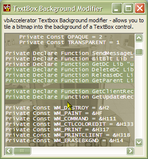
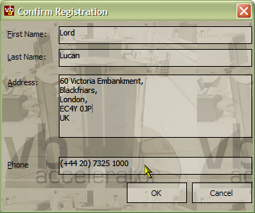

VB5 TextBoxBack Demonstration (126K)
VB5 TextBoxBack Demonstration (126K)
 VB6 TextBoxBack Demonstration (122K)
VB6 TextBoxBack Demonstration (122K)
 25 Nov 2002
25 Nov 2002
First Posted
 Subclassing Without The Crashes
Subclassing Without The Crashes

Tile a Bitmap Into a TextBox Background
An interesting hack which gives you a picture in the background of any multi-line text box.
This sample presents a small class that allows you to tile a bitmap into the background of a TextBox. Note that the technique only works on multi-line text boxes, as the drawing of single-line TextBoxes is done in a different way and cannot be easily overridden in code.
Drawing A TextBox Background
The TextBox control in VB is basically a Windows TextBox control with a thin VB wrapper around it. Although the Windows TextBox control hasn't been designed to allow a user to modify it's background, you can still do it by overriding some of the draw messages sent to the control.
The basic principle of overriding the drawing is to subclass the TextBox for the WM_PAINT message which is sent whenever a portion of the control needs to be repainted. Unfortunately, the TextBox also draws portions of itself outside WM_PAINT messages so some other messages also need to be worked on as well, which I will describe later.
When a WM_PAINT message is received, you can determine the portion of the control which needs to be updated using the GetUpdateRect API call. You can then take control of the drawing by drawing into the update area after you've called the standard processing for this message. To actually draw a rendition of a multi-line TextBox control would be difficult if it wasn't for the fact that all Windows controls support a method of drawing themselves into a DC to enable you to print a copy of the control surface. This message is the WM_PRINT message, and takes the DC to draw into as the wParam parameter of the SendMessage call and flags controlling which parts of the control to draw in the lParam parameter. Here is the code to cause the control to print itself into a DC:
' declares: Private Declare Function SendMessageLong Lib "user32" Alias "SendMessageA" ( _ ByVal hwnd As Long, ByVal wMsg As Long, _ ByVal wParam As Long, ByVal lParam As Long) As Long Private Const PRF_CHECKVISIBLE = &H1& Private Const PRF_NONCLIENT = &H2& Private Const PRF_CLIENT = &H4& Private Const PRF_ERASEBKGND = &H8& Private Const PRF_CHILDREN = &H10& Private Const PRF_OWNED = &H20& SendMessageLong m_hWnd, WM_PRINT, m_cWorkDC.hDC, PRF_CLIENT Or PRF_CHECKVISIBLE
Once you know this, it is fairly simple to create a version of the control with a different background: draw the background, then ask the control to draw itself (with a transparent background) onto it and then draw it in place.
Unfortunately as mentioned before, the control draws itself outside of the WM_PAINT message as well. To work around this, you also have to respond to WM_CTLCOLOREDIT messages by setting the background to transparent and then repainting and to WM_ERASEBKGND messages (which you eat). Finally, during scrolling the control also needs to be updated. This requires a bit of hacking as you will see if you look at the code, where I create a scroll state machine that ensures painting at the right time. Once this is done, though, you have a control which works exactly as before except with a bitmap in the background!
The cTextBoxBackground class
To make this easier to use, I've wrapped the code up in a simple class. This class has the following methods:
- Attach(ByVal hWndA As Long)
Attaches the class to the multi-line text box with the specified hWnd. Don't call this method until you've set up the background picture first. - Detach()
Detaches from the class so the text box painting goes back to normal. Called automatically when the TextBox is destroyed. - SetBackdrop(pic As IPicture)
Sets the background bitmap from a standard VB picture object (for example, a StdPicture returned from LoadPicture or the picture returned by a PictureBox's Picture property. - TileArea(ByVal hdcTo As Long, ByVal x As Long, ByVal y As Long, ByVal Width As Long, ByVal Height As Long)
The bitmap tiling function is exposed to allow you to tile the bitmap onto any other objects with a hDC property. This is used in the second sample form in the demo to tile the background of the form. - TileOffsetX() As Long
Gets or Sets the initial X offset in the bitmap to start tiling from. - TileOffsetY() As Long
Gets or Sets the initial Y offset in the bitmap to start tiling from.
To use it, first add a TextBox to a form, set it to multi-line mode and then create a form level instance of the cTextBoxBackground class (here I'm assuming it's called m_cLargeTextBoxBack). Then set the background picture and attach it to the text box as follows:
Set m_cLargeTextBoxBack = New cTextBoxBackground m_cLargeTextBoxBack.SetBackdrop LoadPicture(App.Path & "\back.bmp") m_cLargeTextBoxBack.Attach txtTest.hwnd
Custom Bitmap Dialogs
Just for fun, I tried using the class to create a dialog with a completely customised appearance, so all of the UI elements are drawn using a bitmap. The result is shown below:
This dialog uses two bitmaps - one which is a gamma-lightened version of the other. Note that if you incorporated the vbAccelerator DIBSection code into your project, you could automatically create lighter and darker bitmaps by image processing one of them - this technique is used in the PopupMenu object elsewhere on the site. However, for the purposes of simplicity, I just created the two bitmaps in a drawing package.
The four text boxes on the form all use the cTextBoxBackground class as described before. To fill the background of the form, and to draw the background of the buttons, I created two additional cTextBoxBackground objects so I could use the TileArea method. The background is drawn during the Form_Paint method, like this:
Private Sub Form_Paint()
' Draw a dark background:
m_cBack(UBound(m_cBack) - 1).TileArea Me.hDC, 0, 0, _
Me.ScaleWidth \ Screen.TwipsPerPixelX, _
Me.ScaleHeight \ Screen.TwipsPerPixelY
' Draw a separator line before the buttons:
m_cBack(UBound(m_cBack)).TileArea Me.hDC, _
0, cmdCancel.tOp \ Screen.TwipsPerPixelY - 4, _
Me.ScaleWidth \ Screen.TwipsPerPixelX, 1
End Sub
To draw the buttons, I used the "Owner Draw Button" code also in this area and used the same method to draw the background. Here's the code for drawing a button:
Private Sub IOwnerDrawButton_DrawItem( _
ByVal lhWnd As Long, ByVal lHDC As Long, _
lLeft As Long, lTop As Long, lRight As Long, lBottom As Long, _
ByVal bPushed As Boolean, ByVal bChecked As Boolean, _
ByVal bEnabled As Boolean, ByVal bInFocus As Boolean, _
bDoDefault As Boolean _
)
'
bDoDefault = False
Dim xOffset As Long
Dim yOffset As Long
Dim tilerIndex As Long
' draw light button, up
tilerIndex = UBound(m_cBack)
If (bPushed) Then
' draw dark button, down
tilerIndex = tilerIndex - 1
End If
' store original offsets:
xOffset = m_cBack(tilerIndex).TileOffsetX
yOffset = m_cBack(tilerIndex).TileOffsetX
' Find the control for this hWnd by enumerating the controls collection:
Dim cmd As Control
Set cmd = ControlForHwnd(lhWnd)
' create new offsets:
m_cBack(tilerIndex).TileOffsetX = cmd.left / Screen.TwipsPerPixelX
m_cBack(tilerIndex).TileOffsetY = cmd.tOp / Screen.TwipsPerPixelY
If (bPushed) Then
m_cBack(tilerIndex).TileOffsetX = m_cBack(tilerIndex).TileOffsetX - 1
m_cBack(tilerIndex).TileOffsetY = m_cBack(tilerIndex).TileOffsetY - 1
End If
' Fill background:
m_cBack(tilerIndex).TileArea lHDC, lLeft, lTop, lRight - lLeft, lBottom - lTop
' Draw Button edge:
SetBkMode lHDC, TRANSPARENT
Dim junk As POINTAPI
MoveToEx lHDC, lLeft, lTop, junk
LineTo lHDC, lRight - 1, lTop
LineTo lHDC, lRight - 1, lBottom - 1
LineTo lHDC, lLeft, lBottom - 1
LineTo lHDC, lLeft, lTop
' Draw Text:
Dim tR As RECT
tR.left = lLeft
tR.Right = lRight
tR.tOp = lTop
tR.Bottom = lBottom
If (bPushed) Then
tR.left = tR.left + 1
tR.tOp = tR.tOp + 1
tR.Right = tR.Right + 1
tR.Bottom = tR.Bottom + 1
End If
DrawText lHDC, cmd.Caption, -1, tR, DT_CENTER Or DT_VCENTER Or DT_SINGLELINE
' return offsets to their original values:
m_cBack(tilerIndex).TileOffsetX = xOffset
m_cBack(tilerIndex).TileOffsetX = yOffset
End Sub